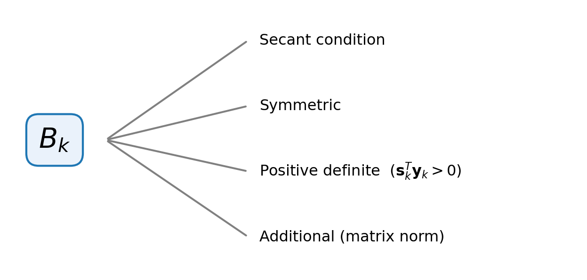

2 Quasi Newton Methods
Newton Method: Require calculation of Hessian matrix \(H_{ij}=\frac{\partial^2f}{\partial x_i\partial x_j}\)
Steepest Descent: Find the descent direction using local quadratic approximation with identity matrix as Hessian. \[ \min_{\mathbf{p}\in\mathbb{R}^n}f(\mathbf{x}_k)+\nabla f^T(\mathbf{x}_k)\mathbf{p}+\frac{1}{2}\mathbf{p}^TI\mathbf{p} \]
Idea of Quasi-Newton Method
Instead of using precise second-order derivative information to construct quadratic approximation, use a matrix \(B_k\) that approximate the Hessian and update at each iteration
2.1 Generic Approach of Quasi-Newton Methods
Quadratic Objective Function
The descent direction \(\mathbf{p}_k\) at each iteration is found by finding the minimizer of the following qudratic approximation of the objective function. \[ \min_{\mathbf{p}}f_k+\nabla f_k^T\mathbf{p} + \frac{1}{2}\mathbf{p}^TB_k\mathbf{p} \]
Approximate Hessian \(B_k\)
- symmetric (a Hessian matrix would be symmetric)
- Positive definite (to make sure existence of minimizer)
Remark 2.1. The minimizer can be found as \(\mathbf{p}_k=-B^{-1}_k\nabla f_k\), which would be a descent direction if \(B_k\) is PD.
Note
Remark 2.1 can be verified using Remark 1.2.
Secant Condition
The idea of secant condition in quasi Newton method is to approximate the Hessian matrix with gradient difference. In 1D case, this is simply
\[ \frac{\mathrm{d}^2f}{\mathrm{d}^2x}\approx\frac{\left.\frac{\mathrm{d}f}{\mathrm{d}x}\right|_{x_{k+1}} - \left.\frac{\mathrm{d}f}{\mathrm{d}x}\right|_{x_k}}{x_{k+1}-x_k} \]
Generalized to multi-variable case, using Taylor expansion of \(\nabla f(\mathbf{x}_{k+1})\) \[ \nabla f(\mathbf{x}_{k+1}) \approx \nabla f(\mathbf{x}_k) + \nabla ^2 f(\mathbf{x}_k)(\mathbf{x}_{k+1} - \mathbf{x}_k) \] therefor, we can approximate the Hessian with matrix \(B_{k+1}\in\mathbb{R}^{n\times n}\) satisfy the secant condition \[ \underbrace{\nabla f(\mathbf{x}_{k+1}) - \nabla f(\mathbf{x}_k)}_{\mathbf{y}_k} = B_{k+1}\underbrace{(\mathbf{x}_{k+1}-\mathbf{x}_k)}_{\mathbf{s}_k} \]
The same secant condition can also be derived by matching the next-step model \(m_{k+1}(\mathbf{p}) = f(\mathbf{x}_{k+1}) + \nabla f_{k+1}^{\mathsf T}\mathbf{p} + \frac{1}{2}\mathbf{p}^{\mathsf T}B_{k+1}\mathbf{p}\) to the true gradient at the last two iterates: \[ \nabla m_{k+1}(0) = \nabla f(\mathbf{x}_{k+1}), \qquad \nabla m_{k+1}(-\alpha_k\mathbf{p}_k) = \nabla f(\mathbf{x}_k) \] \[ \Rightarrow \nabla f(\mathbf{x}_{k+1}) + B_{k+1}(-\alpha_k\mathbf{p}_k) = \nabla f(\mathbf{x}_k) \Rightarrow B_{k+1}(\mathbf{x}_{k+1}-\mathbf{x}_k) = \nabla f(\mathbf{x}_{k+1})-\nabla f(\mathbf{x}_k) \] From the Taylor expansion perspective, \(\nabla f(\mathbf{x}_{k+1})-\nabla f(\mathbf{x}_k) = \nabla^2 f|_{\mathbf{x}^\ast}(\mathbf{x}_{k+1}-\mathbf{x}_k)\), so \(B_{k+1}\) is the multi-direction slope of the linear approximation of the gradient.
Positive Definite Condition
As we mentioned before, \(B_{k+1}\) has to be positive definite so that the quadratic objective function has minimizer and \(\mathbf{p}_k\) found is a descent direction. If the quasi Newton methods shown later (DFP and BFGS), it can be shown that if previous step \(B_{k}\) is PD, then \(B_{k+1}\) is PD if \[ \mathbf{s}_k^T\mathbf{y}_k>0 \]
This follows from the secant condition by left-multiplying \(B_{k+1}\mathbf{s}_k=\mathbf{y}_k\) with \(\mathbf{s}_k^{\mathsf T}\): \[ B_{k+1}\mathbf{s}_k=\mathbf{y}_k \Rightarrow \mathbf{s}_k^{\mathsf T}B_{k+1}\mathbf{s}_k = \mathbf{s}_k^{\mathsf T}\mathbf{y}_k>0 \]
- if \(f\) is strongly convex, then \(\mathbf{s}_k^{\mathsf T}\mathbf{y}_k>0\) holds for \(\forall\,\mathbf{s}_k,\mathbf{y}_k\)
- \(\mathbf{s}_k^{\mathsf T}\mathbf{y}_k>0\) not always true for general \(f\)
- in use Wolf or strong Wolf line search, \(\mathbf{s}_k^{\mathsf T}\mathbf{y}_k>0\) holds
Additional Condition
It is obvouse that \(B_k\) should be symmeteric, i.e. \(B^T_k = B_k\). However, the \(B_k\) satisfied the secant condition and symmetric is not unique. Counting the degrees of freedom:
- \(B_k\) is symmetric \(\rightarrow n(n+1)/2\) unique element
- secant condition \(\rightarrow n\) equations
so \(B_k\) is not uniquely determined.
To uniquely detemines \(B_k\), additional condition should be imposed and one resonable would be requring the \(B_{k+1}\), the Hessian for next interation be a symmetric matrix satisfying secant condition and also closest to previouse Hessian in some sence, i.e. require \(B_{k+1}\) be the one that closest to \(B_k\): \[ B_{k+1} = \arg\min_{B}\left(\lVert B - B_k \rVert \;\middle|\; B = B^{\mathsf T},\ B\mathbf{s}_k = \mathbf{y}_k\right), \] where \(\lVert\cdot\rVert\) be some matrix norm.
Summary
The quasi Newton methods search the descent direction for next step by approximate the function locally with quadratic function \[ m_k(\mathbf{p}) = f(\mathbf{x}_k) + \nabla f(\mathbf{x}_k)^{\mathsf T}\mathbf{p} + \frac{1}{2}\mathbf{p}^{\mathsf T}B_k\mathbf{p} \quad\Rightarrow\quad \mathbf{p}_k = \arg\min_{\mathbf{p}} m_k(\mathbf{p}) = -B_k^{-1}\nabla f(\mathbf{x}_k) \] The approximate Hessian \(B_k\) is required to satisfy the secant condition, be symmetric and positive definite (\(\mathbf{s}_k^{\mathsf T}\mathbf{y}_k>0\)), and a further additional closeness condition (in some matrix norm) to be uniquely determined: \[ B_{k+1} = \arg\min_B\left(\lVert B - B_k\rVert \;\middle|\; B = B^{\mathsf T},\ B\mathbf{s}_k = \mathbf{y}_k\right) \]
Figure 2.1 collects the requirements imposed on \(B_k\).
2.2 DFP Update
The DFP update measures the closeness of \(B\) to \(B_k\) (the additional condition above) with a weighted Frobenius norm: \[ \lVert\cdot\rVert_W := \lVert W^{1/2}AW^{1/2}\rVert_F, \qquad \lVert\cdot\rVert_F^2 := \sum_{ij} a_{ij}^2 \] where \(W\) should satisfy \(W\mathbf{y}_k = \mathbf{s}_k\). One example is \(W = \bar{G}_k^{-1}\), where \[ \bar{G}_k = \int_0^1 \nabla^2 f(\mathbf{x}_k + \tau\alpha_k\mathbf{p}_k)\,\mathrm{d}\tau \] is the average Hessian.